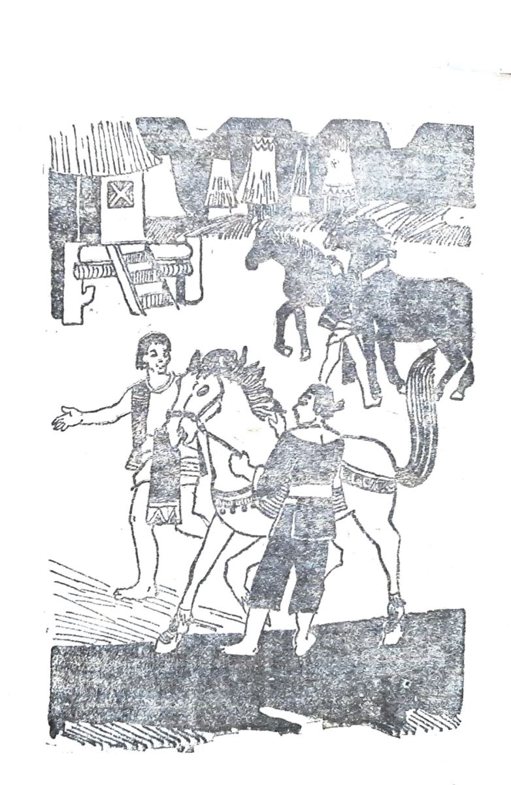

Ấp Tây Sơn giáp với cao nguyên mênh mông rậm rạp. Đây là nơi sinh sống của đồng bào Thượng Ê Đê, Ba Na, Gia Rai …Không khí khởi nghĩa cũng lan cả tới vùng này.
Đường từ Tây Sơn lên cao nguyên phải vượt một dãy núi rất cao bằng một con đèo rất dài và hiểm trở. Đó là đèo Mang. Đồng bào Ba Na ở quanh đèo Mang thiện chiến, phóng lao giỏi, bắn nỏ trúng, họ còn săn voi rừng, bắt voi rừng, luyện voi rừng rất tài. Nghe tin anh em Nguyễn Nhạc sửa soạn khởi nghĩa chống chúa Nguyễn, người Ba Na bảo nhau:
-Ô, muốn đánh Chúa phải có ta giúp mới nên. Nhưng mà ta có phục thì ta mới giúp.
Họ lại hỏi:
-Làm thế nào thì ta mới phục?
-Phải bắt được đàn ngựa thần! Thế mới là được Trời giúp.
Người ta vẫn kể cho nhau nghe là quanh vùng đèo Mang có một đàn ngựa thần. Chúng hàng trăm con. Con đầu đàn là một con ngựa đực rất dữ, lông của nó không định được là đen hay tía mật. Bởi vì mấy người được thoáng nhìn thấy nó, thuật lại không giống nhau. Người thì bảo nó ngựa ô, người thì bảo nó tía mật. Bầy ngựa xuất hiện rất quái lạ. Người ta bất chợt thấy chúng phi ào qua những chỗ cheo leo, có khi chúng lướt qua lũng hẹp, có khi thấy chúng nối đuôi nhau bước môt trên đỉnh Chư Yang Sin lẩn trong mây. Nói gọn lại là chưa ai đến gần được đàn ngựa này cả. Nhưng người ta kể rằng chúng rất dữ, rất thính. Chúng dám đánh lại cả cọp. Con đầu đàn thì thật ma mãnh. Nó canh chừng cho cả đàn, hễ có một chút nguy biến, nó hí lên một hơi dài, thế là cả đàn theo nó phi như giông như bão, đi đâu không ai biết…
Đồng bào Ba Na ai bắt được ngựa thần thì họ phục, họ theo.
Biết vậy, cậu Ba Thơm quyết đi bắt ngựa. Cậu Ba bây giờ là một chàng trai trẻ tầm thước nhưng cực kỳ khỏe đẹp, chân tay gân guốc, lồng ngực nở vuông, tóc quăn đen nhánh, miệng rộng cười tươi. Cậu Thơm đem theo một số thủ hạ, đem lương khô và binh trí ngược đèo Mang. Đoàn người lặn lội suốt ba tháng trời trên đầu nguồn ngọn suối, họ theo vết vó ngựa, theo phân ngựa đi tìm đàn ngựa rừng. Trải bao nỗi đói khát, nạn ruồi vàng, vắt, muỗi, thình lình họ gặp chúng đang gặm cỏ trong một cái thung lũng hẹp. Con đầu đàn đứng trên một mỏm đất cao canh cho cả đàn: ‘‘Chao ôi, mày mới đẹp làm sao chứ!’’. Và cậu bám đàn ngựa một tháng ròng rã nữa để hiểu thật cặn kẽ về chúng. Đến lúc ấy thì đoàn săn bắt thuộc lòng nếp sống của đàn ngựa, lúc nào chúng ở đâu, làm gì…
Cậu Ba Thơm nghĩ kế trị chúng. Cậu sai lấy gỗ tròn quây thành một cái bẫy chỉ có một cửa vào rất hẹp. Cậu sửa soạn lừa con đầu đàn vào bẫy. Cậu bảo:
-Trước hết phải tách nó ra khỏi đàn, sau mới bắt nó.
Vẫn theo nếp sống quen thuộc, đàn ngựa từ một thung lũng kín tránh gió ban đêm đi kiếm ăn. Trong khi đi như thế này, đàn ngựa kéo dài ra, con đầu đàn trông không xiết. Đây chính là lúc có thể bắt ngựa được.
Đàn ngựa đi theo một con suối đá. Đến một hẻm núi, bữa nay hẻm lại bị cành gai lấp kín. Con đầu đàn chụm tai lại nghi ngờ, nó chưa kịp làm gì thì thình lình trống chiêng hòa với tiếng người hò hét inh ỏi rồi ống lệnh thi nhau nổ đùng đùng. Ngựa đầu đàn hí một hơi giận dữ. Nó quay ngang dẫn đàn chạy theo vách đá. Chỉ một thoáng nó vọt qua cửa bẫy. Cậu Thơm và thủ hạ nhanh như chớp phóng cành gai lấp cửa. Họ làm rất nhanh nên chỉ một hai con ngựa khác cũng lọt bẫy với con ngựa Chúa.
Nó quả là con ngựa Chúa. Đứng bên ngoài bẫy nhìn con ngựa lồng lộn vùng vẫy mà đoàn người thấy trống ngực đánh thùm thụp. Họ để con ngựa lồng lộn một ngày mệt sức rồi mới bắt đầu bắt trói nó. Họ dùng thòng lọng và cả cần bắt voi để trói chân ngựa. Con ngựa bị bốn năm cần, cái ghì chân trước, cái níu chân sau, cái ghim đầu. Nó càng giãy, nút thít càng chặt.
Cậu Thơm bỏ đói con ngựa ba ngày. Nó rũ đầu im lặng, nhưng khi có người đến gần là nó lại giận dữ giằng giật dữ dội.
Đã đến lúc cậu Thơm trị nó. Cậu lấy lá non chìa cho nó. Con ngựa né đầu tránh, mắt nó long sòng sọc, lông trắng vằn những tia máu. Nó nhất định không chịu ăn.

.Chờ một buổi nữa, con ngựa sùi bọt mép. Nó vừa đói vừa khát. Cậu Thơm ngắm con ngựa bằng con mắt tinh tường. Đây chính là lúc cái khát đang hành hạ con vật nhiều nhất. Cậu múc một gàu nước đến thật gần, chìa vào mõm ngựa, hơi nước mát lạnh nhả vào mũi nó. Con ngựa không né đầu, nó cũng không một chút cúi đầu vào cái gàu nước. Nó lé mắt nhìn, lưỡi nó thè ra rất dài. Cậu Thơm giơ cao cái gàu cho nước chạm vào đầu lưỡi ngựa. Con ngựa rùng mình liếm nước, liếm nữa, rồi nó gằm đầu xuống uống nước. Được vài ngụm, nó ngửng đầu hí, tiếng hí của nó kéo dài, rền rĩ, thê thiết như mừng như than. Nó đã chịu thua người bắt được nó …
Lẽ tất nhiên, một con ngựa đầu đàn, một con ngựa thần, không phải đã để đầu hàng. Cậu Thơm còn tốn bao nhiêu công sức nữa để làm cho ngựa yêu mình, chịu mình. Thế rồi nó chịu đi nước kiệu, đi nước đại. Nhưng những cái khó khăn ấy bì sao được với cái khó ban đầu đã trải qua.
Bắt xong, dạy xong ngựa đầu đàn là đến bắt cả đàn ngựa, dạy chúng, luyện chúng không còn là chuyện không làm được nữa.
Ít lâu sau, một hôm người ta thấy một đoàn người ngựa rất đông phi nước kiệu vào buôn Ba Na. Con ngựa đi đầu mang cậu Thơm trên lưng nó. Nó quả là một con ngựa đẹp, một con ngựa chiến thật hùng, thật oai. Lông nó màu tía mật thật sẫm, gần như đen. Bờm nó dài bay tung trong gió, đuôi cong như đuôi chồn thơm, mũi nở rộng hất ngửa, mặt dài, gầy gân guốc…
Già làng Ba Na trầm trồ khen con ngựa đẹp và rồi sửng sốt đến thích thú reo lên:
-Giàng ơi! Đúng là con ngựa thần đầu đàn rồi.
Thế là tất cả người Ba Na từ sông Côn đến núi Chư Yang Sin theo quân khởi nghĩa. Già làng hứa với thủ lĩnh Nguyễn Nhạc: ‘‘Chừng nào ra quân, người Ba Na xin góp một trăm tay nỏ, năm trăm tay giáo và một trăm thớt voi chiến’’.